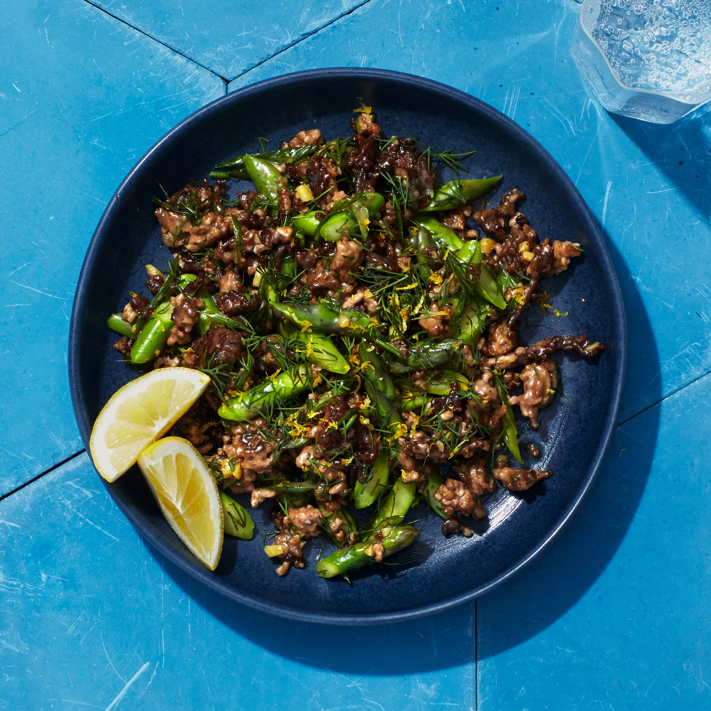

Dill Chicken

Description
My baby loves this dish. The dill gives it a buttery tast and the asparagus fits a deeper flavor profile and a
crunchyt mouth feel.
- vegetable oil
- ground lamb
- salt
- black pepper
- ginger
- scallions
- asparagus
- dill
- lemon
-
Heat a dry large cast-iron skillet over medium-high until beginning to smoke. Pour in 1 Tbsp. vegetable oil,
then
add 1 lb. ground lamb and use a wooden spoon or heatproof spatula to press meat into a thin layer. Sprinkle with
1
tsp. Diamond Crystal or ½ tsp. Morton kosher salt, season with freshly ground black pepper, and scatter one 2"
piece
ginger, peeled, finely chopped, over. Cook, undisturbed, until lamb is deeply browned underneath, about 5
minutes.
-
Break up meat into bite-size pieces, then add 6 scallions, thinly sliced, 1 lb. asparagus, woody ends trimmed,
sliced on a diagonal ½" thick, and ½ cup finely chopped dill fronds and tender stems. Season with salt and
pepper.
Cook, tossing often, until lamb is cooked through and asparagus is bright green and just crisp-tender, about 2
minutes (it’s okay if asparagus is still a little crunchy—it will continue to soften off the heat). Taste and
add
more salt and pepper if needed. Scatter finely grated zest of ½ lemon over.
-
Divide stir-fry among bowls or plates and top with more dill. Serve with lemon wedges for squeezing over.